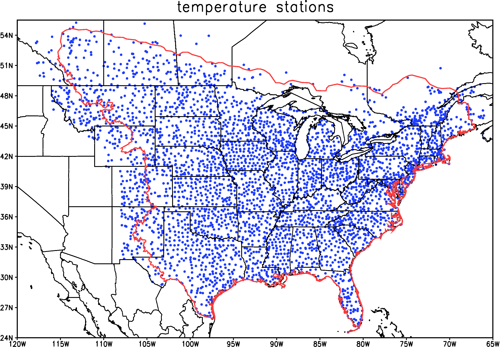

Downscaled Climate Projections
Data and Data Quality Control
Data Sources
The station data for precipitation, maximum daily temperature and minimum daily temperature comes from two sources: 1) the National Weather Service's (NWS) Cooperative Observer Program (COOP) (1950-2009) and 2) Environment Canada's Canadian Daily Climate Data (CDCD) (1950-2007). Approximately 4000 stations in the US and Canada were used for training our statistical models. We also used snowfall data from these same data sources in order to help correct the liquid equivalent of frozen precipitation bias. A map of the locations of the temperature stations is shown below.
Home